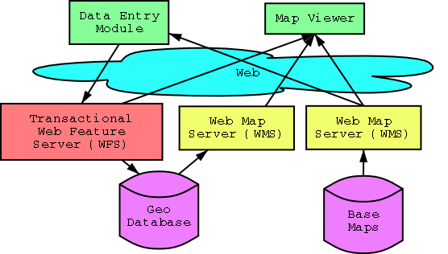

Empowering communities to build and share maps over the web.
"Show me the back streets of Sydney"
Bicycle Riders in Sydney have a problem. The streets are narrow, congested and hilly. There are plenty of back streets ideal for cycling, but working out which streets connect and how to avoid the big hills is a black art. Secret bike routes which include back alleys, drainage lines, and blocked off streets are traded in dingy pubs between cyclists. While this is fun it is also elitist and many people never consider riding because they don't realise it is possible to cross the city safely on a bicycle.
What Sydney cyclists need is a map of Sydney bike routes. Some organisations have tried to produce these maps, but they have all had their limitations.
The Community Map Builder provides a web page with a city map to a cyclist. The cyclist can then enter their favourite bike route on top of the map. Click, click, click, ... Submit. The bike route is collected from the web page and sent to a bike map database. After hundreds of cyclists enter their favourite bike routes, a comprehensive bike map of Sydney is built, updated and maintained and given back to the cycling community.
This use case has been for my pet subject of bike paths, but it is equally applicable for anyone wanting to collect geographic information from a lot of people.
This tool is something we would like to give to the global community - so we are developing it as open source code, and aiming to stich in open source components where available.

This module will show a basemap, and allow a user to build a map feature (like a bike track), give it attributes, and save it to the server.
This module should be simple to use so that many people will use it. Ie, it should run in a web browser.
Currently, work in underway to enhance the geotools java applet to provide the required functionality for this. It is open source under the GPL. See http//geotools.sourceforge.net
With lots of people maintaining the same database, we are going to need to develop updating rules. For example, if someone enters a bike path down the center of a multilane freeway, who should be allowed to remove the entry?
For these rules we should allow users to moderate each other as has been done very successfully with some news and comment sites like http://slashdot.org.
This will be a server which recieves update requests and updates a geographic database. It will be designed according to the Transactional Web Feature Server specification from the Open GIS Consortium - http://opengis.org. At the time of writing, this spec was in draft form and has not been released publicly, however there are people working on this project who are members of the Open GIS Consortium who have access to this document.
There are a few open source technologies which are looking promising in this direction.
Postgresql is a free database - http://www.postgresql.org/, postgis -http://postgis.refractions.net/, is providing GIS search functionality into it.
Mapserv - http://mapserv.gis.umn.edu is another potential candidate, especially using the mapscript interface it provides.
However, there is work required to get something up and running here.
This is all that an end user will require to view the created maps. The end user will only need a web browser to view the created maps.
There are a few open source technologies available, geotools being a prime candidate - http//geotools.sourceforge.net.
This is generally how basemaps will be served to the web. The specifications for the WMS are specified out by the Open GIS Consortium. It may also be how the maps created by the Community Map Builder are served to the web.
Mapserv - http://mapserv.gis.umn.edu version 3.5 provides a good open source WMS.
There are already numourous maps being served to the web using WMS protocols. With a bit of luck, you will be able to find one which will be useful for your Map Builder application.
All communications between components of the Community Map Builder will use Open GIS Standards. This means that any component or basemap can be replace with another when required.
We are currently looking for developers. If you want to help out, contact me:
Cameron Shorter, cameron@shorter.net